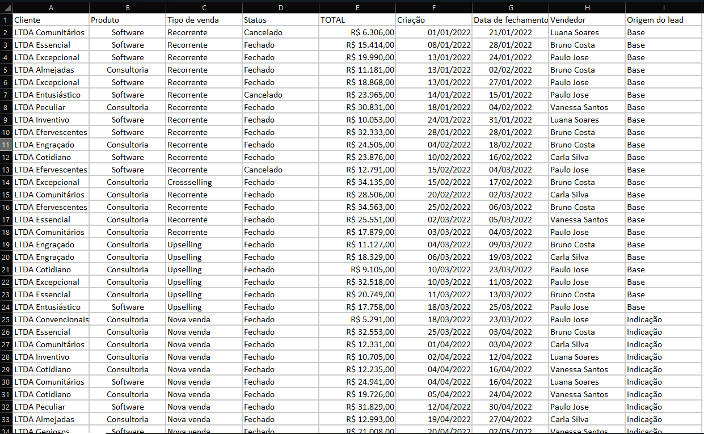
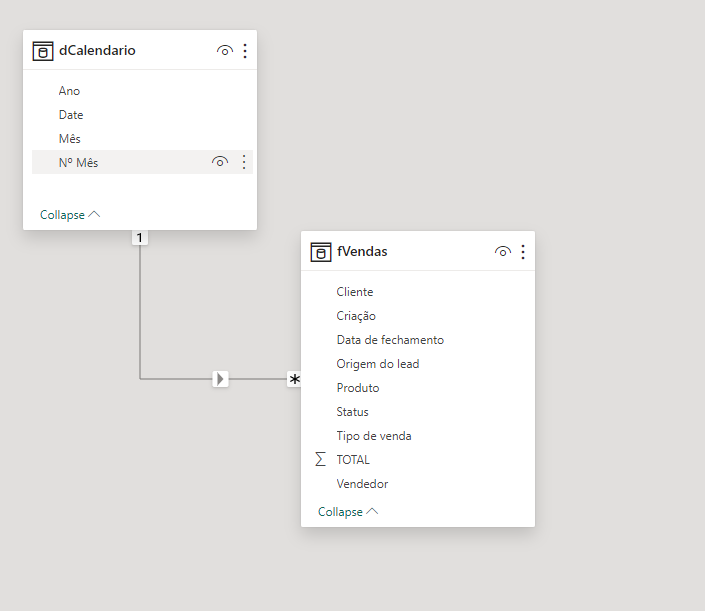
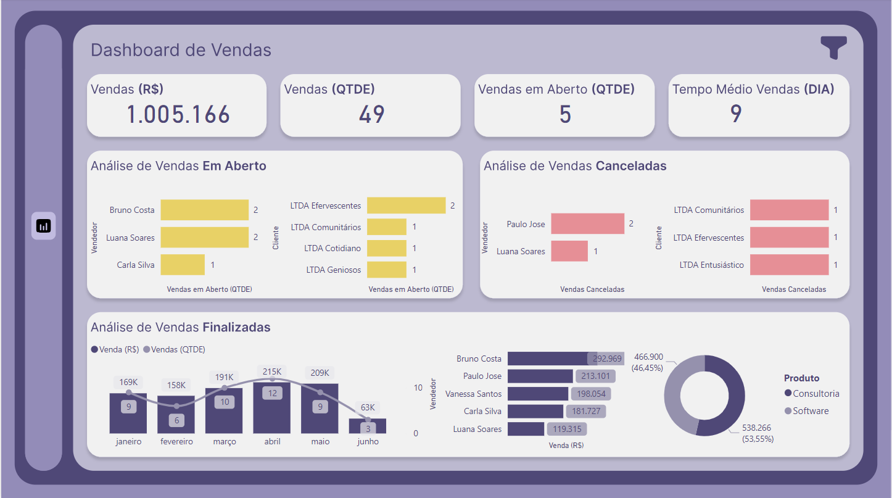
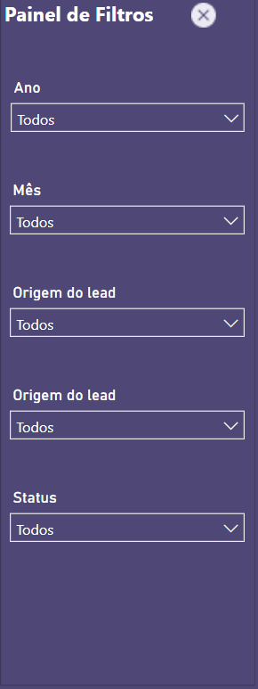

Online Store Sales Dashboard
Context
Simple one-page dashboard created for an online store owner to track their key metrics. The original data has been modified.
Step 1: Understanding the data source
The database is an Excel file sent by the client as a sample of the ERP extraction. The original data has been changed.You can check the data clicking Here
Table f_Detalhes_Ordem_Servico
Columns
Cliente: The customer name.Produto: Product name.
Status: Shows the sale Status.
TOTAL: Total Amount.
Criação: Criation order date.
Data de fechamento: Closing order date.
Vendedor:Seller name.
Origem do lead: Lead source.
Step 2: Business Problem.
Hereafter, the main questions required by the customer:
-
What is the main problem you expect to solve with this Dashboard?
Monitoring Orders, with a clear view of billing, closing time, and pending orders. -
Do you already have your key indicators defined?
Yes, the followings:
- Billing Orders
- Number of Orders
- Number of Open Orders
- Average Closing Time (days)
-
Who will have access?
Only him (the manager) -
What level of data granularity is desired?
Day / Month and Year Product Seller Type of Sale Customer Lead Source -
How often will these data be analyzed?
Weekly -
Data Provision:
Excel spreadsheet sent by the client -
What will be the data sources?
Excel?
Step 3: Data Modeling
Considering the low complexity of the data and the purpose, I chose to keep the fact table, adding only a calendar table for temporal analyses.
Step 4: Data Visualization
In this section, the main requests of the project and its visions were answered.
DAX Measures
Filter Views
